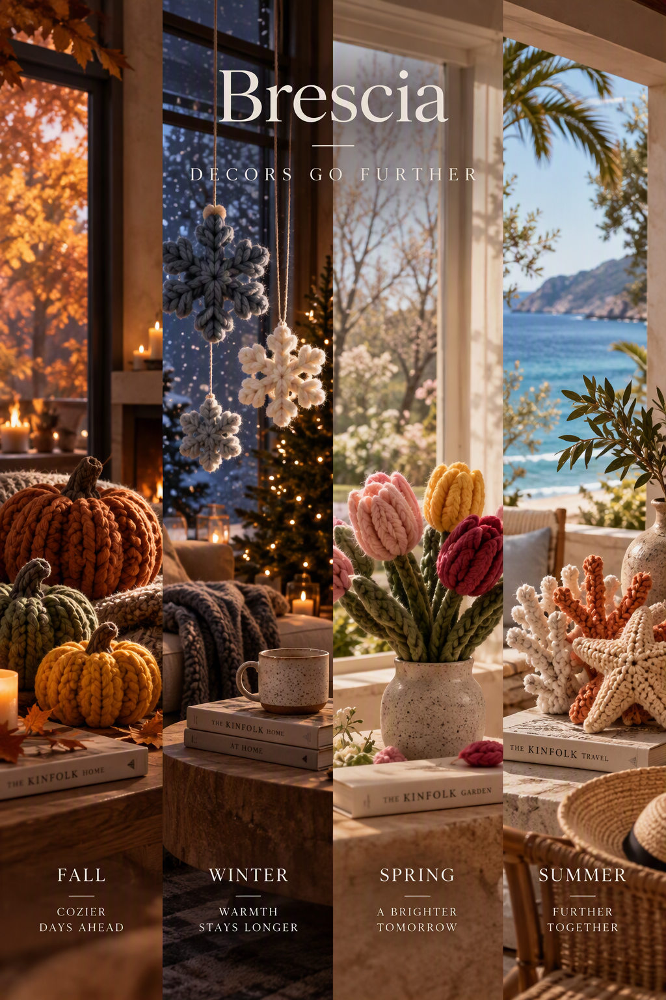

03 / THE ART OF HOME
A space that
feels like you.
Thoughtful objects and understated details that give a room its feeling. Brescia Home is about creating spaces that feel personal, collected and quietly beautiful.
Explore Brescia Home ↓
THE SPACE AROUND YOU
Not just a room.
A feeling.
A home is built from more than walls and furniture. It is the objects you keep close, the light at the end of the day, the little details that somehow become part of you.
Brescia Home explores home décor through a restrained, tactile lens: pieces that add character without adding clutter, and beauty that feels lived-in rather than staged.
THE BRESCIA SIGNATURE
Considered in
every corner.
- 01 Thoughtful decorative details
- 02 Calm forms and tactile materials
- 03 An inviting, personal atmosphere
- 04 Beauty that belongs in real life